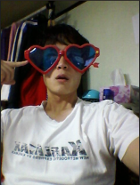

For 11 years since I started my carrier in Samsung Electronics,
I have been accumulated various knowledge about UX design practice as I have been working in the Mobile UX field.
I am proud to have experienced all aspects of mobile UX related from both the feature phone and the smartphone to wearable UX,
and I think I have accomplished many achievements that help the company.
Especially, I feel proud to have helped strengthen the 3rd party ECO of the Samsung Galaxy Watch series by launching a
PC/MAC program called Galaxy Watch Designer. I initiated this program in 2016 by myself.
I have not only been in the mobile app UX but also experienced the OS platform UX and planning work which is difficult to experience
in Korea while performing Tizen and bada OS platform UX tasks. That was a great opportunity to develop the ability to see the UX as well
as the industry-wide situation from a broad perspective.
Also, I have been dispatched to India as an on-site specialist for about 8month to set up local UX work and to conduct UX knowledge
transferring. Through this experience, I learned how to adapt and interact with foreign cultures, and how to perform new tasks and achieve
results that have not existed.
As a graduate of engineering school, I am able to understand and adopt technology quickly, and there is much interest
in the new technology field. I am also interested in Unity 3D, Java, and HTML5 programming, and recently started to study python
programming for data engineering.
I'm a nice team player that it's very familiar to adapt to the new environment and always used to collaborate with teams.
Also, I am a person who is outgoing, loves sports - my hobby is basketball, mountain climbing.